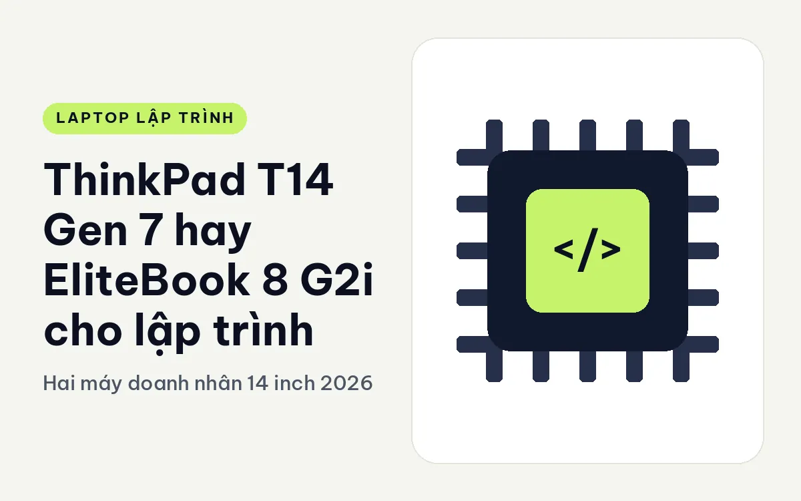
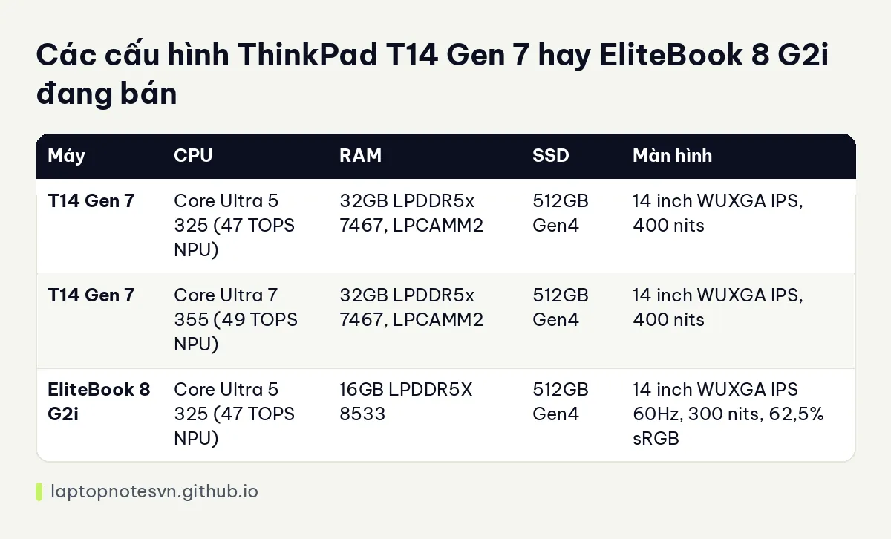

ThinkPad T14 Gen 7 hay EliteBook 8 G2i cho lập trình - Hai máy doanh nhân 14 inch 2026

Hai máy này thường nằm cùng một danh sách khi công ty cấp ngân sách mua laptop cho nhóm dev. Cả hai đều 14 inch, đều dùng chip Intel Core Ultra thế hệ mới, đều có NPU. Điểm khác nằm ở chi tiết, và chi tiết lại là thứ quyết định bạn dùng máy có sướng hay không sau một năm. Bài này đặt ThinkPad T14 Gen 7 lên bàn cân theo hướng người viết code.
Đối thủ của nó là HP EliteBook 8 G2i 14 Next Gen AI, dòng máy doanh nhân của HP với vỏ nhôm và thiết kế mỏng. Hai bên ngang tầm nhau về phân khúc nhưng khác nhau khá nhiều ở phần RAM và khả năng mở rộng.
Thiết kế ThinkPad T14 Gen 7 đặt cạnh EliteBook 8 G2i
T14 Gen 7 nặng khởi điểm 1,29 kg, dày 15,88 đến 21,95 mm, khung hợp kim tái chế đạt chuẩn độ bền MIL-STD-810H. EliteBook 8 G2i có vỏ nhôm màu Glacier Silver, nặng 1,4 kg, dày từ 11,75 mm ở mép trước. Nhìn số liệu, EliteBook mỏng hơn, T14 nhẹ hơn một chút. Cả hai đều dễ nhét vào ba lô.
Về bàn phím, ThinkPad giữ kiểu phím sâu cùng nút TrackPoint màu đỏ ở giữa. EliteBook có kiểu phím phẳng gọn hơn. Nếu bạn gõ code liên tục nhiều giờ, hãy ra cửa hàng thử gõ vài phút thay vì tin vào bài viết.
T14 Gen 7 có đầy đủ cổng cho người đi nhiều: 2 cổng Thunderbolt 4, 2 USB-A 5Gbps, HDMI 2.1, jack tai nghe và RJ45. EliteBook 8 G2i có Thunderbolt 4 và HDMI 2.1 để cắm màn ngoài. Mô tả EliteBook không liệt kê cổng mạng, nên nếu bạn cần cắm dây LAN, hãy xác nhận trước khi mua.
Thông số các phiên bản còn hàng
T14 Gen 7 có hai bản, EliteBook 8 G2i hiện chỉ có một bản trong dữ liệu.

| Máy | CPU | RAM | SSD | Màn hình |
|---|---|---|---|---|
| T14 Gen 7 | Core Ultra 5 325 (47 TOPS NPU) | 32GB LPDDR5x 7467, LPCAMM2 | 512GB Gen4 | 14 inch WUXGA IPS, 400 nits |
| T14 Gen 7 | Core Ultra 7 355 (49 TOPS NPU) | 32GB LPDDR5x 7467, LPCAMM2 | 512GB Gen4 | 14 inch WUXGA IPS, 400 nits |
| EliteBook 8 G2i | Core Ultra 5 325 (47 TOPS NPU) | 16GB LPDDR5X 8533 | 512GB Gen4 | 14 inch WUXGA IPS 60Hz, 300 nits, 62,5% sRGB |
Cùng một chip Core Ultra 5 325, nhưng T14 đi với 32GB còn EliteBook chỉ 16GB. Với dev, khoảng cách RAM này thực sự có ý nghĩa. Mô tả EliteBook còn khuyên chọn bản 32GB khi mua, dù vậy bản có trong dữ liệu hiện tại là 16GB.
Bộ nhớ T14 dùng mô-đun LPCAMM2, thay được và lên đến 64GB theo mô tả hãng. EliteBook dùng LPDDR5X và chỉ có một khe M.2 cho SSD. Khi bạn tính chuyện nâng cấp, T14 linh hoạt hơn. Có thể bạn muốn đọc thêm về lý do RAM quan trọng ở trang dev cần bao nhiêu RAM.
Màn hình và pin
Màn T14 sáng 400 nits, có công nghệ Eyesafe, bảo vệ mắt khi nhìn lâu. Màn EliteBook sáng 300 nits, phủ 62,5% sRGB, hợp việc văn bản và code nhưng không phải màn để chỉnh ảnh. Mô tả EliteBook gợi ý cắm màn ngoài qua HDMI 2.1 hoặc Thunderbolt 4 nếu cần màu chính xác, khuyến nghị này hợp lý.
Pin T14 có hai tuỳ chọn 60Wh và 75Wh, sạc nhanh được khoảng 80% trong một giờ. EliteBook dùng pin 62Wh. Hai bản pin này cùng cỡ, nên khác biệt thực tế sẽ nằm ở cách bạn dùng. Gõ code và đọc tài liệu thì pin kéo dài, còn chạy build liên tục hoặc nhiều container thì pin tụt nhanh ở cả hai.
Bảo mật, quản lý và hỗ trợ doanh nghiệp
Cả hai máy đều nhắm vào khách hàng doanh nghiệp nên chú trọng bảo mật và quản lý máy từ xa; riêng EliteBook 8 G2i có ghi rõ cảm biến vân tay trong thông số. Với một nhóm dev trong công ty, phần này ít được chú ý lúc chọn máy nhưng lại quyết định chuyện IT có chịu cấp máy cho bạn hay không. Nếu phòng IT của bạn đã quen một hãng, chọn đúng hãng đó sẽ nhận cấu hình và bảo hành thuận hơn.
Một điểm dev hay quên là khả năng sửa chữa. T14 Gen 7 được mô tả là rất dễ tháo, thay được RAM và SSD. EliteBook có vỏ nhôm đẹp nhưng chỉ có một khe M.2, nghĩa là muốn tăng ổ cứng phải thay ổ chứ không thêm được ổ thứ hai. Với dev có nhiều repo, dataset và image Docker, ổ 512GB sẽ đầy sau vài tháng nên chuyện nâng SSD là có thực.
Đặt hai máy vào việc code thật
- Frontend, backend nhẹ: cả hai đều đủ dùng, kể cả bản 16GB nếu bạn không bật Docker.
- Docker, Kubernetes local: T14 32GB làm tốt hơn. Trên EliteBook 16GB, bạn phải giới hạn số container.
- Dev chạy trên Windows 11 Pro: EliteBook bản trong dữ liệu có Windows 11 Pro cài sẵn, dev dùng Hyper-V hoặc WSL2 sẽ khỏi mua key riêng.
- Quản trị, DevOps: T14 có RJ45, cổng tiện khi cấu hình thiết bị mạng hoặc ngồi phòng server.
Quyết định cuối cho người code
Chọn T14 Gen 7 nếu bạn cần 32GB RAM ngay, muốn sau này thay RAM, cần cổng mạng và muốn bàn phím ThinkPad. Trang T14 Gen 7 cho lập trình giải thích kỹ hơn từng điểm này.
Chọn EliteBook 8 G2i nếu bạn thích vỏ nhôm mỏng, dùng ứng dụng nhẹ, cần Windows 11 Pro cài sẵn và chấp nhận 16GB. Nếu đang nghiêng về EliteBook, bạn nên xem thử các cấu hình 32GB của hãng, vì như đã nói, mô tả khuyên chọn bản đó cho người cần chạy nhiều ứng dụng nặng cùng lúc.
Một cách quyết đơn giản: viết ra ba việc nặng nhất bạn làm hằng tuần. Nếu trong đó có Docker, máy ảo hoặc IDE lớn, T14 32GB là lựa chọn đỡ phải suy nghĩ thêm.
Đăng ngày 09/11/2026